Define and edit Colourisers using this panel. Colourisers are objects which convert a numerical value into a colour for display. Selection of which Colouriser to use for each Measurement is done using the Measurement Manager plugin (or the Measurement name popup menu in the main display window).
Colourisers operate on a number range, i.e. numbers from the
smallest to the biggest number that this Colouriser is generating
colours for. The number range depends on which Measurements are using
it. Minimum and maximum values are updated whenever a Colouriser is
assigned to a Measurement. There is no method for controlling this
range manually.
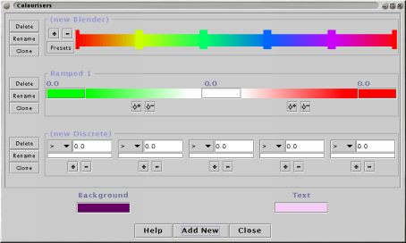
The panel displays each of Colourisers that currently exist. The "Add new" button at the bottom of the panel allows the creation a new Colouriser.
There are presently four types of Colouriser:
To the left of each Colouriser are three buttons:
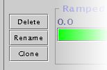
Blender Colourisers
The Blender colouriser consists of two or more colours positioned at fixed points along the number range. The colour for a number which lies between any two points is determined by linear interpolation.
The simplest form of Blender has two colours, one representing the minimum of the the number range and the other representing the maximum:
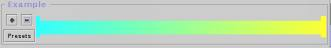
Colours for numbers are determined by a linear interpolation between the two colours. The colour of the midpoint of the number range will be halfway between the minimum and maximum colours.
The colour at a fixed point can be changed by double clicking on it, which opens a colour chooser dialog box.
A new fixed colour can be added by double clicking on a point somewhere along the colour blend. Alternatively, the "+" button adds a new fixed colour to the blender.
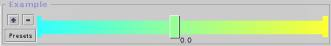
Clicking on a colour point makes it 'selected'. The selected colour point is drawn with a shaded outline. The numerical value associated with the selected colour point is displayed beneath it.
Fixed points, except for the minimum and maximum colours, can deleted by selecting them and then using the "-" button.
The minimum and maximum colours cannot be moved. Other colour points can be moved by dragging them left and right along the colour blend. Colours can be dragged over their neighbours.
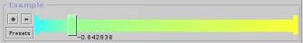
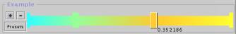
Ramped Colourisers
Each Ramped Colouriser has two ramps, one for negative values and for positive values.
Both of ramps generates a seqence of colours fading from a start colour to and end colour. The end colour of the negative ramp and the start colour of the positive ramp are shared. Click on the solid colour boxes are either end of a ramp to change the start or end colours.
The following examples illustrate how ramps are made. In these examples the colours fade from white to red. The rate at which the fading takes place is determined by the positioning of nodes.
Above each ramp are two buttons, 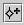 adds a node to the ramp, and removes the current node from the ramp. The current node is the one represented as a hollow diamond shape, other nodes on the ramp are drawn as filled in diamonds. Click on any node to make it the current node.
The simplest form of ramp is one with no nodes, shown below. The output ramp is a linear fade from white to red.
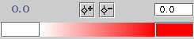
In the next example, a node has been added, and moved to the left-hand side of the ramp. This causes the fade to happen more quickly at the lower end of the number range.
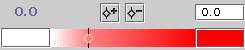
To understand how the fade rate is computed, consider the following graph which plots position in the input ramp against that of the output ramp. The input ramp is always a linear ramp from one colour to another, but, as will seen, the output can be constructed piecewise from a set of linear sub-ramps,
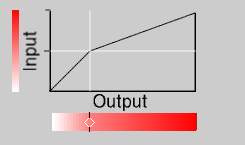
The graph how the output ramp is now composed of two linear sub-ramps. This gives rises to the change in fade rate that occurs at the node position. The input ramp is divided into two equally sized portions, and these portions are then scaled to fit the sub-ramps which form the output.
If the node is moved to the right-hand side, the fade happens more quickly at the upper end of the number range, as seen in the next image.
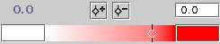
Another graph of input ramp against output ramp shows how the two sub-ramps have been reconfigured.
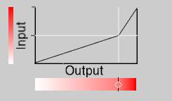
If a second node is added, the ramp becomes three linear sub-ramps.
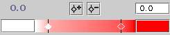
The three ramps are arranged as follows:
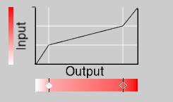
In general, when N nodes are present, the input ramp is divided into N+1 equally sized chunks and the output ramp is formed by squashing or stretching these chunks according to the node positions.
Discrete Colourisers
The Discrete Colouriser is a collection of colours linked to simple rules, such as "< -10". To generate a colour from an input number, the rules are tested in turn from left to right. The colour is chosen from the first rule which is true for this number.For example, a Discrete Colouriser with three rules would look like this:
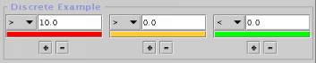
The rules, ">10.0", ">0.0" and "<0.0", partition the input numbers into one of three groups. Each rule has a colour, displayed in a panel under the rule. Clicking on this panel opens a colour chooser dialog.
Rules are tested from left-to-right. Once one rule is true, no futher rules are tried. It is therefore important that the rules are ordered correctly. If, for example, the order of the first two rules in the above example is swapped:
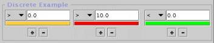
Each rule has two buttons underneath it. To insert a new rule, use the "+" button and to remove a rule, use the "-" button.
Equalising Colourisers
The Equalising Colouriser builds a histogram of the values that it is being used for. This infomation is used to partition the range into a fixed number of bands so that each band contains approximately the same number of values. A colour is then allocated to each band.
The histogram data is displayed in the colourisers panel. Under it are bars which show how the bands have been positioned and coloured.
The number of colours is selected by the "Level" control. The lowest level uses only two bands (and therefore two colours). Each higher level uses twice as many bands as the previous level.
The colour for each band is determined by interpolating between the specified start and end colours, selected using the two buttons under the "Level" control.